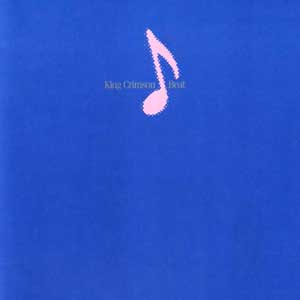
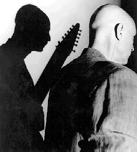
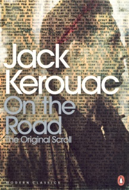
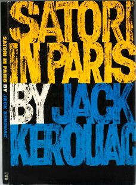
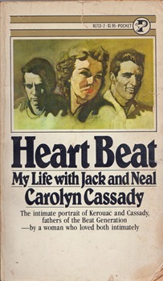
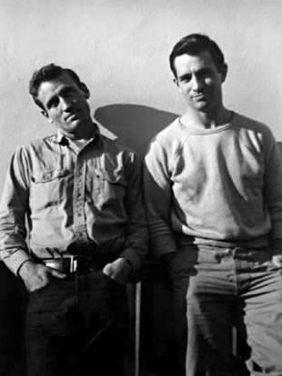
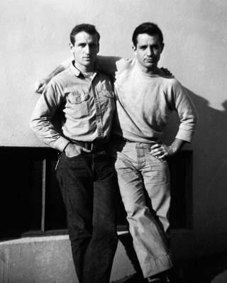
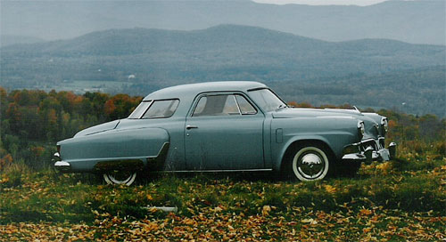
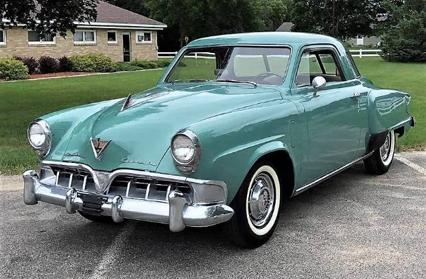

|

Beat -
Grabado en 1982
Por primera vez KC
mantiene una misma formación por más de un disco en estudio. Y mantiene también la línea musical
de "Discipline", el álbum anterior. Muy buenos rocks Neal and Jack
and Me y The howler (el primero es rock-new wave y tiene fraseos
interconectados de guitarras y stick; el segundo, con acordes disonantes, es más crimsoniano
clásico). Hermosas canciones Heartbeat y Two hands (creaciones
de Belew).
Nostálgico Waiting
man, con un ritmo afro hipnótico en su primera parte,
ejecutado en stick y percusión (en vivo
el tema duraba casi 10 minutos e incluía un dueto inicial de percusión de Bruford y Belew). Excelente instrumental Sartori in Tangier,
con intro de stick simulando un cello y que sigue con un potente ritmo al que se
acopla el resto del grupo; Fripp se larga con un solo de guitarra como pocas
veces lo hizo con esta formación. Frippertronics, improvisación y caos en el instrumental Requiem.
Formación de la banda |
Temas |
| Robert Fripp: guitarra, órgano, frippertronics |
1 - Neal and Jack and Me (Neal y Jack y yo) 4'23 |
| Adrian Belew: guitarra y voz líder |
2 - Heartbeat (Latido) 3'54 |
| Tony Levin: bajo, stick y voz |
3 - Sartori in Tangier 3'35 instrumental |
| Bill Bruford: batería |
4 - Waiting man (Hombre esperando) 4'24 |
| |
5 - Neurotica 4'48 |
| |
6 - Two hands (Dos manos) 3'23 (letra) |
| |
7 - The howler (El aullador) 4'12 |
| |
8 - Requiem 6'36 instrumental |
Música firmada por el grupo - Letras de Adrian Belew
excepto Two hands, de Margaret Belew (pintora y escultora,
esposa de Adrian en esa época).

Tony Levin y Adrian Belew
Notas
-
El nombre del disco es un homenaje a la Generación
Beat, el grupo de artistas norteamericano de los años '50 que fue en parte el
origen de un posterior gran movimiento contracultural. En diferentes partes del
album se hace referencia a varios de estos escritores o a sus obras: el primer
tema alude a la lectura, por parte de Belew en un hotel de París durante una
gira, de la novela On the road (En el camino), de Jack Kerouac, y
nombra otras obras de Kerouac, al propio Kerouac y
a su amigo y compañero de viajes Neal Cassady, también partícipe del grupo; The howler se refiere al poema Howl
(Aullido) de Allen Ginsberg; Sartori in Tangier es una referencia a la novela
de Kerouac Satori in Paris, y nombra a Tangier (ciudad de Marruecos, en
el norte de Africa) porque varios escritores de la Generación Beat fueron a
vivir allí, así como Paul Bowles, autor de la novela The sheltering sky (homenajeada
en el album anterior, "Discipline"). Neurotica era el nombre de
una publicación editada por la Generación Beat a mediados del siglo 20. El nombre del tema Heartbeat
quizás se deba a Heart Beat (Corazón Beat), título
de unas memorias de Carolyn Cassady editadas en 1976, sobre sus antiguas vivencias con su esposo Neal y Jack
Kerouac (aunque la letra de la canción no se relaciona con esas memorias).
-
Satori = término japonés que literalmente significa
comprensión; se usa en el budismo zen con el significado
"iluminación" individual, profunda y última, la razón de ser del
zen. No está claro por qué el tema se titula Sartori in Tangier en el
disco (con una "r" agregada); aparentemente fue un error, ya que está listado Satori in Tangier en el
album en vivo "Absent lovers" y en el DVD "Neal and Jack and
Me".
 

Arriba, ediciones de obras de la Generación Beat.
"Neurotica, The authentic voice of the Beat Generation", es un libro con recopilación de artículos de la revista Neurotica,
editado en 1981, un año antes del lanzamiento del disco Beat.
-
En 1984 se realizó el album "Mister Heartbreak"
de Laurie Anderson, con importante participación de Belew. En el último tema, Sharkey's night, se incluye
un recitado con la voz de William Burroughs, otro integrante de la Generación Beat.
-
Este es el único album de KC en estudio cuyo título no es
el nombre de una de sus canciones. Quizás para no romper totalmente con
esta "regla", el nombre del tema 2 lo incluye.
-
El tema Neurotica está basado en una secuencia de
acordes de Fripp que sobrevivió de la época de ensayos de
"Exposure", su primer album solista.
En las fotos de abajo, Neal (a la izquierda) y Jack durante uno
de sus viajes. Más abajo, un Studebaker Starlite coupe modelo 1952, nombrado en Neal and
Jack and Me.  


|
 Beat
Beat